Qubits are usually considered the information units of quantum information. Mathematically speaking, they are states of the density matrix space of a 2 dimensional Hilbert space, whose basis is generally chosen from the eigenvectors of the Pauli operators.
ρ∈σ(H2)ρ∼(pγ∗γ1−p)
where 0≤p≤1 and
∣γ∣≤p(1−p)
This relation is saturated by pure states.
Bloch sphere

An insightful representation for these objects is given by the Bloch sphere, depicted above.
Any linear operator acting on H2 can be expressed as a linear combination of Pauli operators and the identity:
θ∈L(H2)θ=μ∑αμσμσμ≡(1,σ)
In the case of density matrix operators ρ, the constraints on the operators themselves translate into constraints on the aμ:
ρ=ρ†⇒αμ∈R∀μ
trρ=1⇒α0=1/2
ρ≥0⇒∥α∥≤1/2,αμαμ≥0
We define the Bloch vector (v in the picture, r here) as r≡2α, so that:
ρ=21(Id+r⋅σ)\norm{\vec{r}}\leq 1
$$[[Pure states]] saturate the last inequality.